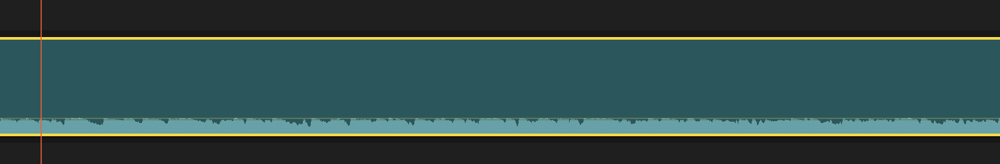
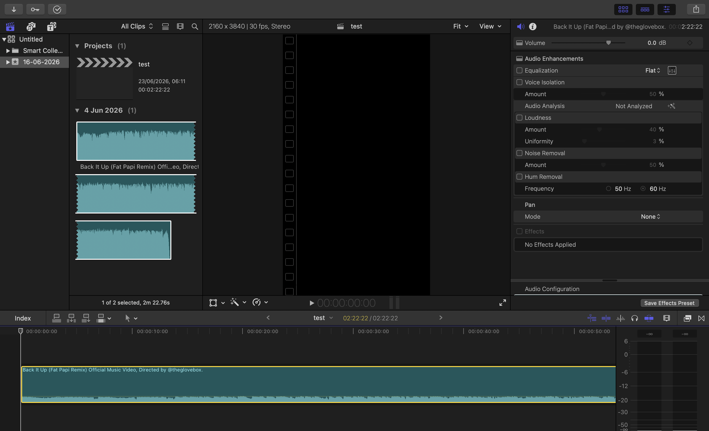

TECHNOLOGIA / FILM / AI
Witaj w świecie
Tech2u.
Recenzuję technologię użytkową, robię filmy i tworzę narzędzia AI dla osób, które lubią, gdy wszystko działa szybciej.
CREATIVE SYSTEM ONLINE
SCROLL TO ENTER
TECH2U / 2026
02 TWÓRCA + DEWELOPER
TECH2U W SKRÓCIE
Film dla
emocji.
AI dla
flow.
Łączę testowanie sprzętu, dobry montaż i AI. Bo technologia ma sens dopiero wtedy, kiedy daje więcej możliwości, a nie więcej kliknięć.
RECENZJE 01
MONTAŻ 02
AI TOOLS 03
03 / BASSMARKER PRO / FINAL CUT PRO

SCROLL TO PLACE MARKERS

LIVE AUDIO ANALYSISAI DLA MONTAŻYSTÓW
BassMarker
Pro.
Wykrywa beaty i automatycznie stawia markery w Final Cut Pro. Ty decydujesz o historii, a program pilnuje, żeby cięcia od początku miały właściwy rytm.
BEAT DETECTIONFCPX READY24 / 25 / 30 / 60 FPS
Chcę BassMarker Pro ↗
01 SOCIAL MEDIA
KANAŁY TECH2U
Recenzje,
które wychodzą
poza ekran.
Auta, drony, sprzęt do tworzenia i technologie, które naprawdę mają znaczenie w codziennym użytkowaniu.